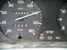
Penvins (prononcer Pennevince), c'est loin, 499 km de chez moi, mais bon, ça dure 3 jours, je n'y suis pas allé l'année dernière et j'ai aussi raté ND de Monts il y a 8 jours (cause camion en panne), alors je prends la route et je passe les 166 666 km...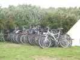
A l'arrivée, plein de vélos, mais qu'est-ce ? Hé bien ce sont des scoutes qui sont venues passer les 3 jours à Penvins, et qui se dévoueront tout au long du week-end avec grâce et bonne volonté incessante.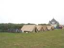
Elles ont monté leurs tentes le long de la haie et traverseront tout le terrain et le parking matin et soir pour aller se laver les dents à l'officine municipale...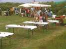
Dom est aussi là, il tiendra un atelier de peinture sur cerf-volant (cerf-volant fourni) pour les petits, et fera aussi un peu d'initiation au combattant pour les grands.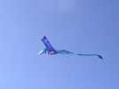
Présent aussi un groupe d'espagnols, sympas, à part le groupe électrogène qui tourne en permanence. L'un a conçu ce beau ptérodactyle, dont la tête seule pose quelques problèmes par vent fort : elle se tourne et tout tourne à la suite, évidemment...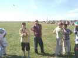
François est venu avec un groupe de handicapés de sa clinique... Leur figure quand ils tiennent la ficelle de l'Albatros2 vaut le coup de leur faire confiance.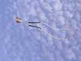
Ce beau flow-form porte une inscription si travaillée que je n'ai pu la lire ! Elle traîne 2 grandes turbines rotatives qui restent incroyablement symétriques dans leurs mouvements !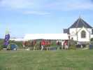
L'organisation monte son barnum à l'entrée. Bon, je me pousse un peu pour faire de la place...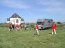
Mais où vont tous ces jeunes gens avec des tubes... On dirait des morceaux du barnum, non ?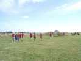
Ah ben ça, le barnum a déménagé sur ses petites pattes ! Encore un coup des scoutes !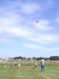
Alain (le président du club) est content, avec toute cette main-d'oeuvre immigrée, il a même le temps de faire voler son bateau... Pourtant, le festival est très orienté "pilotables", et la charmante speakerine ignore superbement les monofils, dommage, la rencontre serait plus sympa.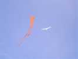
Il y a pourtant quelques membres du CVCF, alors faut montrer qu'on est là ! Je monte mon Albatros2 à côté du Jangang (ou voisin) de Guy (de Vent de Folie, pas du CVCF). A Vierzon, ils en ont fait une famille multicolore...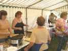
Au déjeuner, ces dames sympathiques vont se dévouer pour nous fournir des repas qui tiennent au corps et plus que satisfaisants. Par rapport aux années précédentes, ça s'est bien amélioré... Mais toujours pas de dessert (on se garde une marge pour 2008 ?)...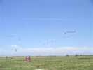
Là-bas, un flow-form avec une queue sur la ligne, mais il en montera ensuite plusieurs. Et au fond, un avion traîne une banderole publicitaire en évitant largement le village des fous...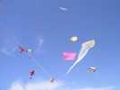
Le CVCF, c'est quand même pas rien. On a monopolisé un coin de terrain et monté du gros. J'ai mon Albatros2, les l'Higuinen ont un pyro blanc, un penta élargi et rose, un multisled à nounours et un Madiot, le Prés. fait dans le costaud avec son delta de 8 m et le flow-form (5x4) de l'Antenne de Beauce...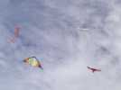
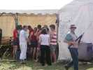
François commence à avoir un petit creux et part aux renseignements. Mais il ne lâche pas son delta pour autant. Son baudrier maison lui permet de se déplacer sans fatiguer ses mimines.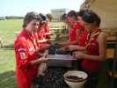
Les scoutes (on dit aussi pionniers, il y a quelques mâles) sont mises à contribution pour préparer les moules...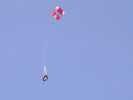
Sur le terrain, un photographe n'en perd pas une miette. Il doit lire Becotus, car il utilise un Calomil.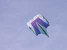
François a aussi lancé un petit flow-form original qui tire d'enfer et est globalement très stable, bien qu'il oscille sur place en permanence ce qui le rend impropre à la photo, dommage...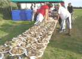
Au déjeuner, un petit hors d'oeuvre (supplément à 3 E avec le petit verre de blanc). Attractif, on se laisse tenter, elles sont un peu ouvertes à la masse mais on peut toujours cracher les esquilles...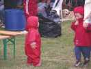
Il ne fait pas froid, mais ce bambin a une super combinaison, qui rend perplexe son aîné...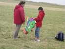
Un curieux cerf-volant de confection, une idée à creuser, peut-être, en ne gardant que le fuselage avec son profil d'aile......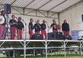
Vendredi soir, concert de chants marins, très bien. Des chansons intéressantes et une bonne qualité des voix et des arrangements, un enthousiasme communicatif des chanteurs...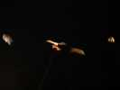
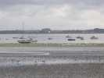
Samedi matin, la mer est basse. La plage est vaseuse du côté du port, mais belle de l'autre côté de l'isthme au bout duquel est le terrain. La vase, ça plaît aux ibis qui se sont multipliés depuis deux ans....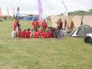
Les scouts, ça se lève tôt, ils ont déjà organisé un pow-wow sur le terrain...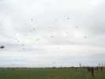
Au fond du terrain, les Awitas sont arrivés (Blandine est venue avec son petit garçon de... 15 jours) et ont déjà monté une myriade de cerfs-volants, des deltas à poche, des raies, des flow-forms, etc.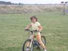
Ce jeune homme a inventé une nouvelle discipline, le bike-kite. Mais comme il n'y connaît rien, il a un peu tendance à emmener nos lignes, il faut l'orienter... plus loin !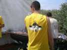
Le déjeuner se prépare, les barbecues chauffent. L'équipe a des T-shirts appropriés, aux armes de la chapelle...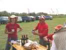
Les Espagnols n'ont pas amené que des cerfs-volants, mais aussi des charcutailles et du vin qu'ils distribuent généreusement...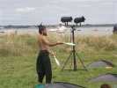
Un amuseur jongleur, guitariste, etc. anime aussi le festival...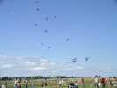
Dans les monofils, figure aussi une belle brochette de Marconis. Le lendemain, après le vol de nuit, il faudra une heure pour tout démêler...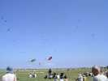
Les Awitas meublent de plus en plus, avec le poisson vert, le chien géant... Malheureusement, au soir, le vent ayant tourné, un train de 3 deltas part à la mer et on le verra disparaître à l'horizon !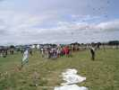
Pendant que les enfants se préparent au lâcher de bonbons, les Pirates ont replié leurs Nasas blanches avec lesquelles ils ont fait de l'initiation de scoutes...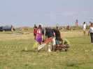
La navette à bonbons est spéciale, du type "papillon qui replie ses ailes". Mais le vent est un peu faiblard à cette heure !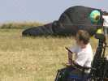
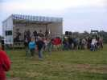
Le samedi soir, Fest-noz. L'orchestre est moyen (et pourquoi les chapeaux mexicains ?), mais le spectacle est dans le pré et les participants pratiquent en connaisseurs les danses bretonnes...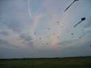
Le ciel est devenu splendide, beaucoup de cerfs-volants sont restés en l'air...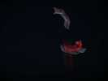
Vol de Nuit encore, comme hier ! La Cream Team (de Chantilly, ça explique pourquoi Cream) a équipé ses deltas de diodes aux bords d'attaque, mais évidemment, le temps de la photo, ça fait de jolis dessins !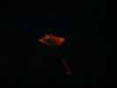
On a descendu les raies, une par terre, l'autre plus bas pour diminuer la traction, et elle participe en fond de spectacle...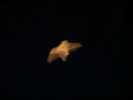
J'ai sorti mon harfang, mais le vent étant monté, il s'agite un peu ! A minuit, je le rentre, et dodo... Mais la fête-noz continuera jusqu'à 6 h pour certains...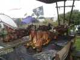
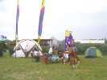
Le CVCF a tout mis en l'air, la conscience tranquille, on a droit à un petit apéritif, offert en grande partie par Michelle et Patrick...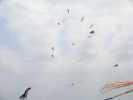
Pendant ce temps, les pilotables ont monté un petit mégateam. Ils monteront même à 17, en mélangeant les 2 lignes et les révos !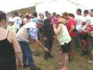
François n'est évidemment pas venu sans sa tige filetée qu'il fait écouter à tout le monde une fois surmontées les réticences à se faire avoir !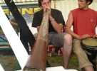
L'après-midi, impro en direct, Didjeridoo et Djembé aux micros, Fabrice au Révo sur le terrain, c'était pas mal...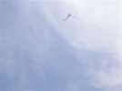
Puis le traditionnel lâcher de bonbons qui a toujours du succès. On a changé de navette, c'est toujours un peu juste mais ça monte !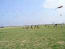
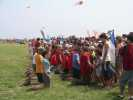
Mais que font tous ces jeunes gens qui se donnent la main, à genoux sur 2 rangées ? C'est pas la prière, c'est une protection contre les tricheurs qui partent avant le top. L'expérience a montré qu'une ligne simple ne suffit pas !